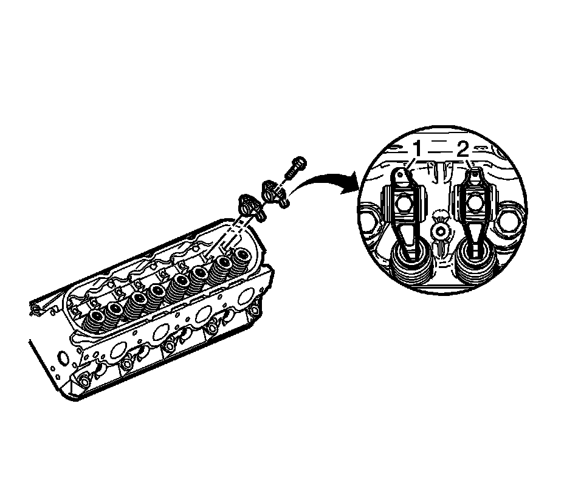
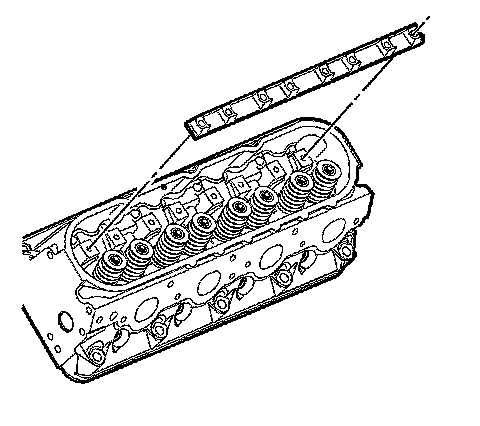
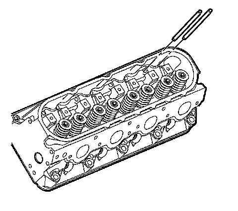

17. Valve Rocker Arm and Push Rod Removal
Valve Rocker Arm and Push Rod Removal (RPO L92)

Important: Place the valve rocker arms, valve pushrods, and pivot support, in a rack so they can be installed in the same location from which they were removed.
1. Remove the valve rocker arm bolts.
2. Remove the valve rocker arms.
The intake rocker arms (1) have an offset design.

3. Remove the valve rocker arm pivot support.

4. Remove the pushrods.